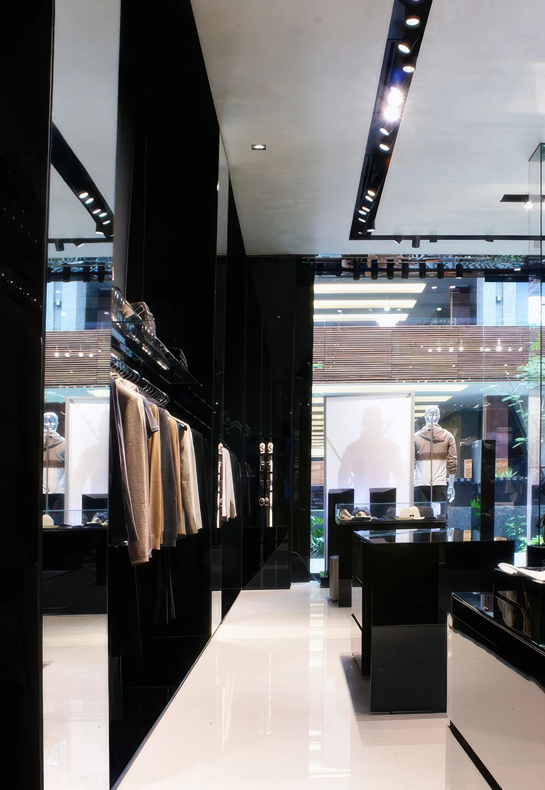
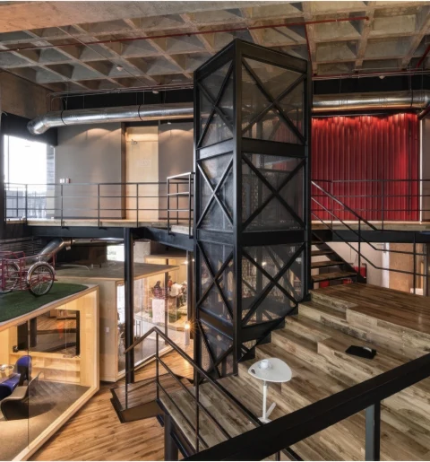

Design & Space Planning
Concept development · Feasibility studies · Programming and space planning · Schematic design · Design development · Retail layouts and customer flow
Architecture & Built Environment
My background combines architectural design and project delivery with workplace research and the coordination of branded physical environments. My early practice spanned residential projects, commercial interiors, retail stores, and exhibition proposals, with responsibilities across concept development, technical documentation, consultant coordination, budgeting, and construction-site supervision.
I expanded this foundation through workplace research and functional analysis, translating organizational needs and patterns of space use into planning scenarios and recommendations. In subsequent multidisciplinary roles, I worked on international office projects and conference installations, combining spatial design, environmental graphics, finish and signage specifications, vendor coordination, fabrication, and implementation reviews. Alongside this work, my experience in research and digital design broadened how I approach the relationships between people, spaces, technology, and organizational needs. Recent independent residential rehabilitation work brings this experience back to existing-building documentation and contractor coordination.
Across these settings, I connect design intent with the planning, documentation, and coordination required for delivery. This portfolio brings together architectural projects, research-led planning, and recent work in workplace and event environments.
Concept development · Feasibility studies · Programming and space planning · Schematic design · Design development · Retail layouts and customer flow
Stakeholder interviews · Focus groups · Site observation · Research synthesis · Functional analysis · Workplace planning scenarios
Existing-conditions documentation · Architectural drawings · Architectural visualization · Finish specifications · Fixture and millwork detailing · Environmental graphics and signage
Client and stakeholder coordination · Consultant and contractor coordination · Vendor sourcing · Budgeting and quotation review · Procurement · Project scheduling · Permit-package coordination
Site supervision · Workmanship and installation reviews · Drawing revisions · Field and progress reports · Final walkthroughs · Handover documentation
Existing-building documentation and coordination of water-storage, drainage, and exterior repairs.
Read case study
Research and spatial analysis informing workplace scenarios and real estate planning.
Read case study
International brand standards adapted for boutiques and shop-in-shops through design coordination and quality control.
Read case studyOffice branding, finish specifications, and vendor coordination across international locations.
Read case study
Temporary event spaces integrating wayfinding, environmental graphics, stage branding, and fabrication.
Read case study
A flexible workplace combining offices, collaborative spaces, and training facilities.
Read case studyGet in touch to discuss opportunities
or potential collaborations.
Explore my professional background
and connect with me.